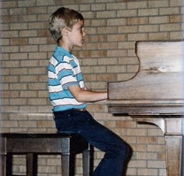

Life at home can be hectic at times! Receiving music lessons in a private studio allows you to focus in a quiet and distraction-free environment. Students of any age and skill level may receive piano lessons in the privacy of my home, which is conveniently located in the Lakeside/Lester Park neighborhood of Duluth. Come discover the gift of music in you!

Children absorb music in the same way they absorb their native language and culture: it simply becomes a part of them. In more ways than one, music is a language in itself. Children who are exposed to music at a very young age quickly internalize the concepts of sound, pitch, rhythm and tone without even realizing it. Many children display some form of musical expression long before uttering their first words. Music lessons, and especially piano lessons, can take the music that already exists inside children and develop an outlet for their musical expression and creativity.
It is never too late to learn how to play an instrument! As an adult, you may not have as much ability to "absorb" music as a language, but you do have the supreme advantage of applying to music what you already know about form, structure, rhythm, styles and the role that human emotion plays in musical expression. Sometimes it takes years for children to fully appreciate and utilize their music education; as an adult, you possess a passion and drive to play the music you already know and love!
Amy Hanauer grew up in Mora, Minnesota. She started piano at age five, and later learned how to play the flute and guitar. In high school Amy began her musical journey with her very first job at Immanuel Lutheran Church in Mora, MN. For three years, she accompanied the congregation and choirs on organ and piano.
After high school, Amy studied piano under Dr. Justin Rubin at the University of Minnesota, Duluth. She also enjoyed singing and performing with UMD's University Singers and Chamber Singers under the direction of Dr. Stanely Wold. After graduating in 2002 with a B.A. in Music, Amy began working with children in a variety of settings. She moved to Atlanta, GA in 2006, and continued her work with children until she finally found the perfect opportunity to combine her two passions.
"A Gift of Music" was founded in 2010 and provided private piano and guitar lessons to students throughout the metro Atlanta area. Amy moved back to the Northland in 2016 and has now reopened "A Gift of Music" in Duluth.
Anyone can learn how to play an instrument... it's never too late! I offer piano lessons at any skill level. Because everyone learns their own way and at their own pace, each individual curriculum and lesson plan will be custom designed for each student. The lessons will focus on all aspects of music: styles, concepts, rhythm, theory, performance and even composition!
You could begin immediately! Please call or email me for current rates and a list of available lesson times.